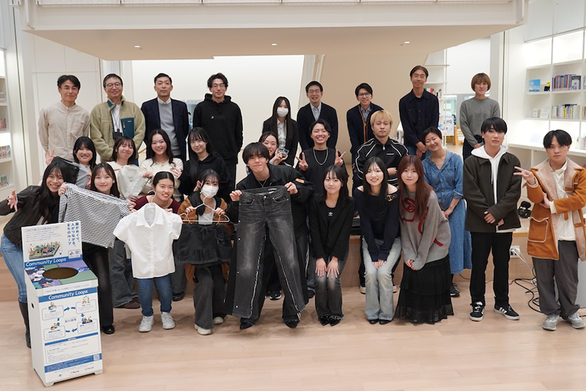

doyoゼミ×community loops
2025年11月22日には、環境省、横浜市、そして採択事業者である合同会社CYKLUS、ハーチ株式会社の皆さまをお招きし、道用ゼミ生として中間発表会を実施しました。 我々の班は「服の遺伝子」をコンセプトに回収されたデニム3本を元に、新たな一着を再構築しました。
続きを読む →
問いを立て、形にする。
道用ゼミは、社会とデザインをつなぐ実践の場。
― その先にある「まだない価値」を探しにいく。
思考を深め、アイデアを研ぎ澄ます。
ここから未来が動き出す。


2025年11月22日には、環境省、横浜市、そして採択事業者である合同会社CYKLUS、ハーチ株式会社の皆さまをお招きし、道用ゼミ生として中間発表会を実施しました。 我々の班は「服の遺伝子」をコンセプトに回収されたデニム3本を元に、新たな一着を再構築しました。
続きを読む →
本日からNew make laboでインターンをさせて頂く事になりました。
実際のリメイク制作現場を見学しつつ、職人の方々の丁寧な手仕事や、素材へのこだわりを間近で体感。
これからワッペン＆お直し屋さんの接客スタッフとしても原宿で勤務させ頂きます。

2027年に横浜で開催される「GREEN×EXPO 2027（国際園芸博覧会）」に向けた、産学官連携の暑熱対策プロジェクト。 横浜市（ヨコハマ未来創造会議）、ユニフォームメーカーの株式会社DAIICHI、そして道用ゼミが協力し、 未利用資源をアップサイクルした新素材「紙糸（TSUMUGI）」を用いたプロダクト開発に挑戦しました。
続きを読む →